Sjekkliste, avvik og kjøretid
Daglig kontroll av lastebil, tilhenger og buss med avvik, bilde og PDF-rapport – og en enkel oversikt over kjøre- og hviletiden din. Virker uten nett.
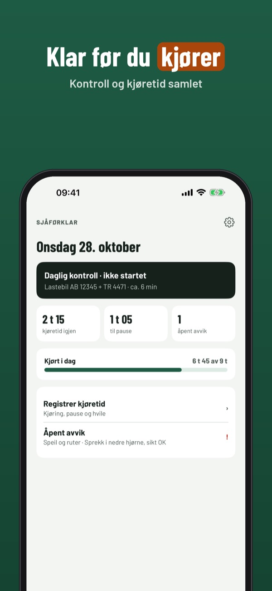
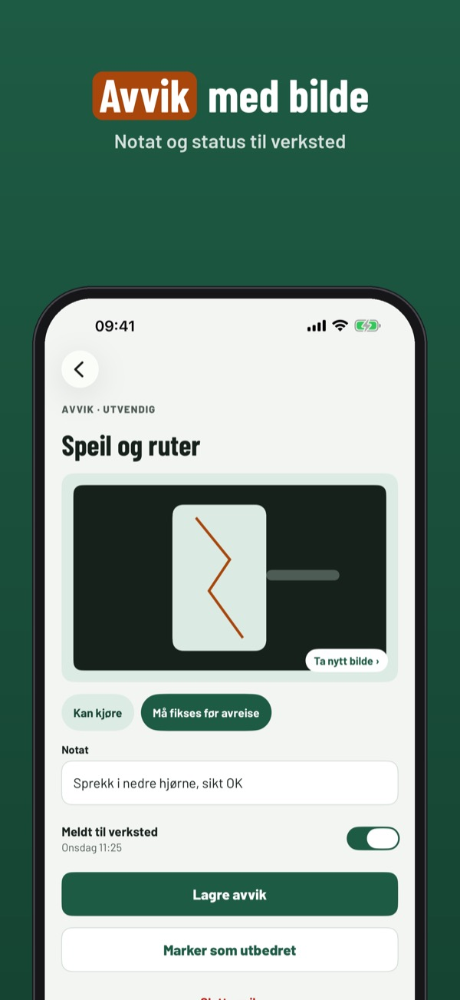
Sjåførklar er verktøyet for yrkessjåfører: gjør den daglige kontrollen, dokumenter avvik og hold oversikt over kjøre- og hviletid du fører inn selv.
Daglig kontroll og avvik for ett kjøretøy kan brukes uten kjøp. Fullversjonen er et engangskjøp som låser opp alle kjøretøy, PDF-rapport, historikk og kjøretid. Ikke abonnement.
Sjåførklar erstatter ikke fartsskriveren og er ikke tilknyttet noen myndighet. Du fører kjøretiden inn selv, og gjeldende regler og fartsskriveren går alltid foran. Regeloversikten er vår egen oppsummering og ikke juridisk rådgivning.
Terms of Use (EULA): https://www.apple.com/legal/internet-services/itunes/dev/stdeula/
Privacy: https://baytechbv.github.io/privacy/sjaforklar-nordic/
Tjekliste, fejl og køretid
Dagligt eftersyn af lastbil, trailer og bus med fejl, billede og PDF-rapport – og et enkelt overblik over din køre- og hviletid. Virker uden net.
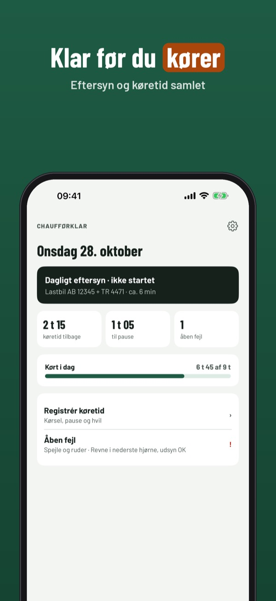
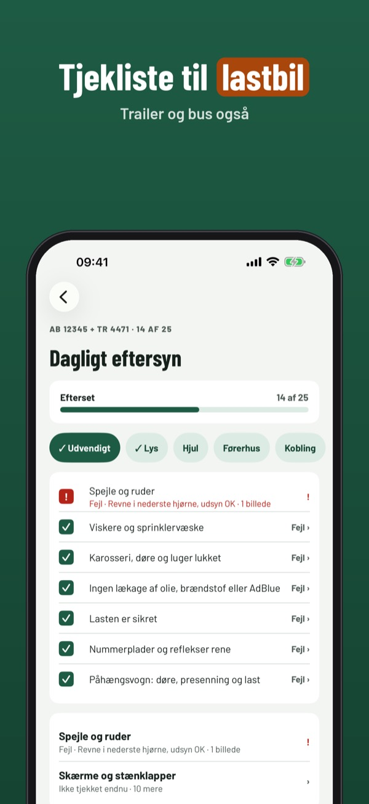
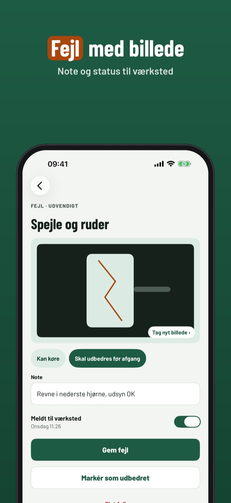
Chaufførklar er værktøjet til professionelle chauffører: lav det daglige eftersyn, dokumentér fejl og hold styr på køre- og hviletid, du selv indtaster.
Dagligt eftersyn og fejl for ét køretøj kan bruges uden køb. Fuld version er et engangskøb, der låser alle køretøjer, PDF-rapport, historik og køretid op. Intet abonnement.
Chaufførklar erstatter ikke fartskriveren og er ikke tilknyttet nogen myndighed. Du indtaster selv køretiden, og gældende regler og fartskriveren går altid forud. Regeloversigten er vores egen opsummering og ikke juridisk rådgivning.
Terms of Use (EULA): https://www.apple.com/legal/internet-services/itunes/dev/stdeula/
Privacy: https://baytechbv.github.io/privacy/sjaforklar-nordic/
Tarkastus, viat ja ajoaika
Kuorma-auton, perävaunun ja linja-auton päivittäistarkastus vikoineen, kuvineen ja PDF-raportteineen – sekä selkeä näkymä ajo- ja lepoaikoihin. Toimii ilman nettiä.
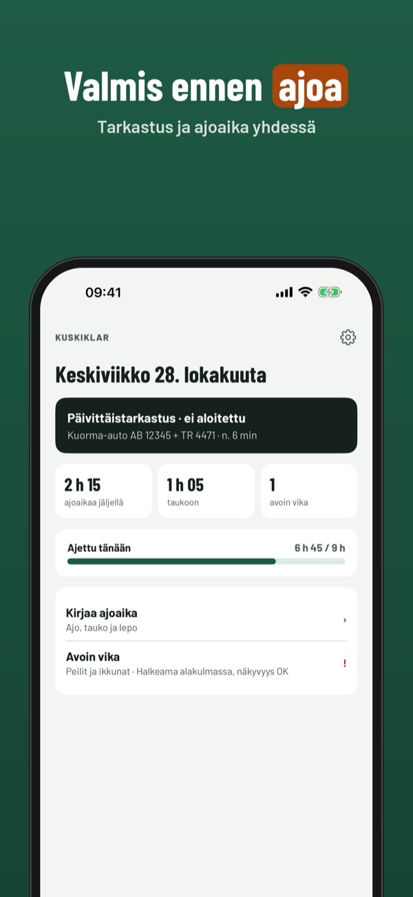
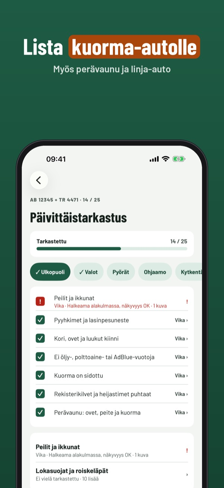
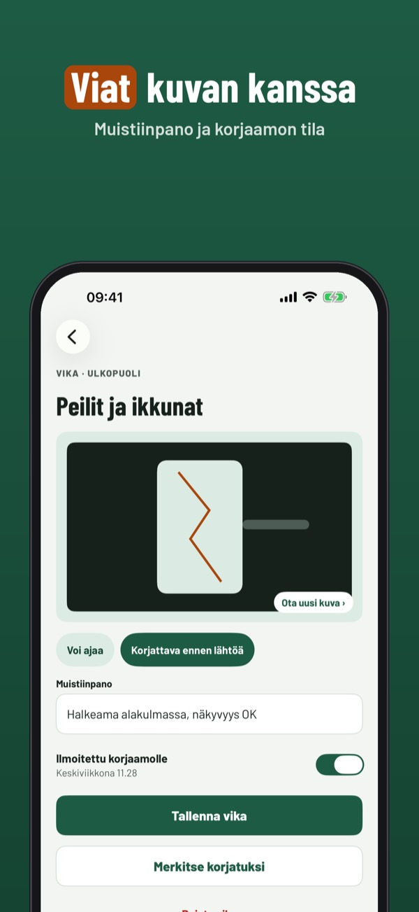
Kuskiklar on ammattikuljettajan työkalu: tee päivittäistarkastus, kirjaa viat ja pidä kirjaa ajo- ja lepoajoista, jotka syötät itse.
Päivittäistarkastusta ja vikoja yhdelle ajoneuvolle voi käyttää ilman ostoa. Täysi versio on kertaosto, joka avaa kaikki ajoneuvot, PDF-raportin, historian ja ajoajat. Ei tilausta.
Kuskiklar ei korvaa ajopiirturia eikä ole minkään viranomaisen kanssa yhteistyössä. Syötät ajoajat itse; voimassa olevat säännöt ja ajopiirturi ovat aina etusijalla. Sääntöyhteenveto on oma tiivistelmämme eikä oikeudellista neuvontaa.
Terms of Use (EULA): https://www.apple.com/legal/internet-services/itunes/dev/stdeula/
Privacy: https://baytechbv.github.io/privacy/sjaforklar-nordic/
Checklista, brister, körtid
Daglig kontroll av lastbil, släp och buss med brister, bild och PDF-rapport – och en enkel överblick över din kör- och vilotid. Fungerar utan nät.
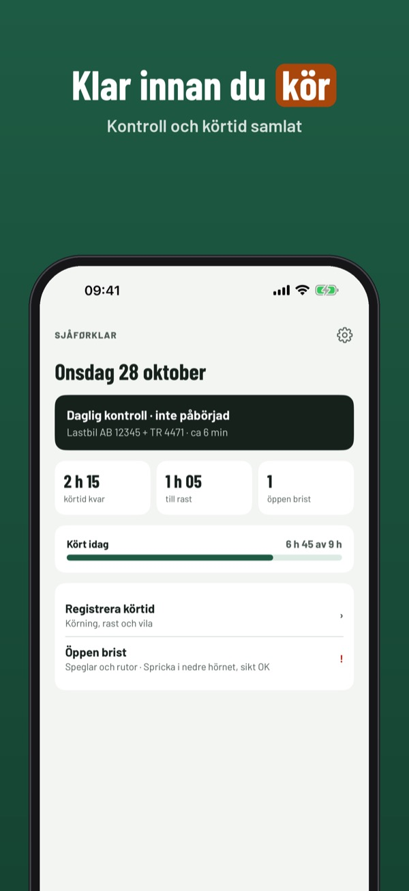
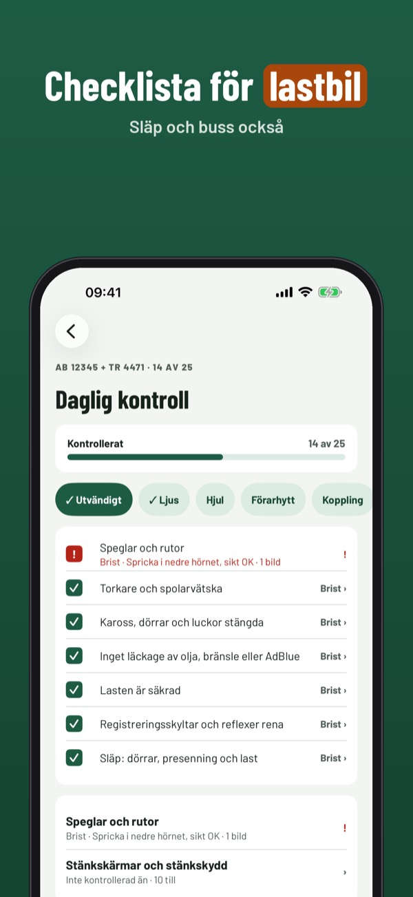
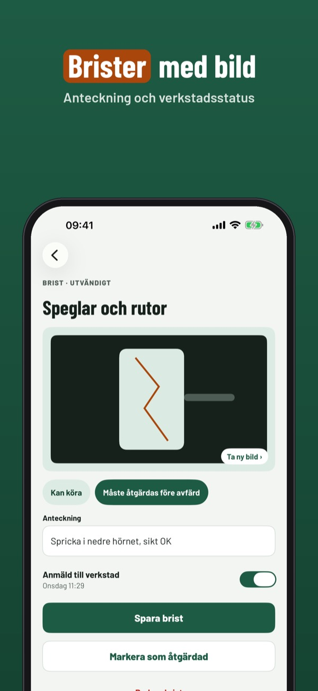
Sjåførklar är verktyget för yrkesförare: gör den dagliga kontrollen, dokumentera brister och håll koll på kör- och vilotid som du själv för in.
Daglig kontroll och brister för ett fordon kan användas utan köp. Fullversionen är ett engångsköp som låser upp alla fordon, PDF-rapport, historik och körtid. Ingen prenumeration.
Sjåførklar ersätter inte färdskrivaren och är inte knuten till någon myndighet. Du för in körtiden själv, och gällande regler och färdskrivaren går alltid före. Regelöversikten är vår egen sammanfattning och inte juridisk rådgivning.
Terms of Use (EULA): https://www.apple.com/legal/internet-services/itunes/dev/stdeula/
Privacy: https://baytechbv.github.io/privacy/sjaforklar-nordic/
Checklist, gebreken, rijtijd
Dagelijkse controle van vrachtwagen, aanhanger en bus met gebreken, foto en PDF-rapport – plus een helder overzicht van je rij- en rusttijden. Werkt zonder internet.
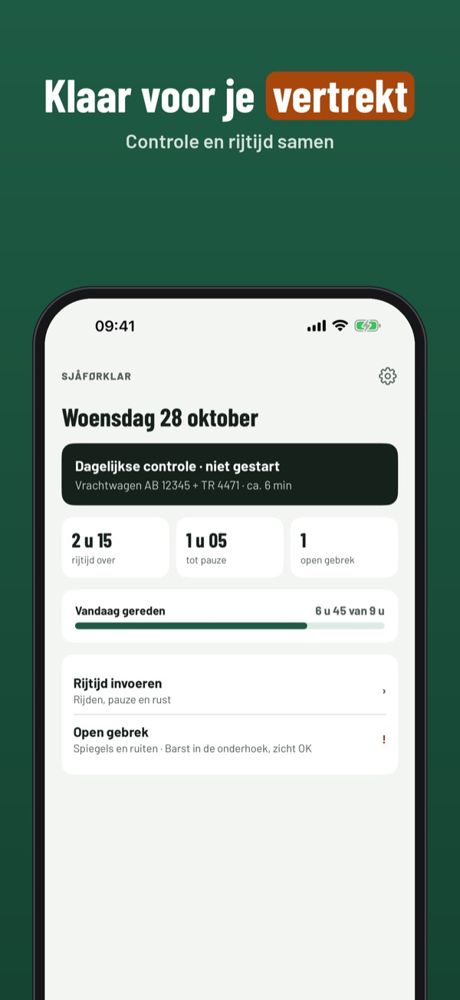
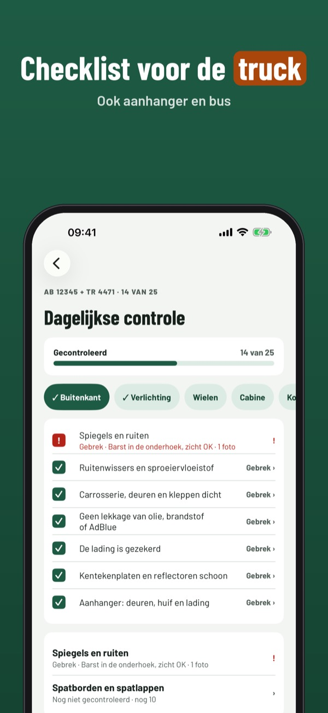
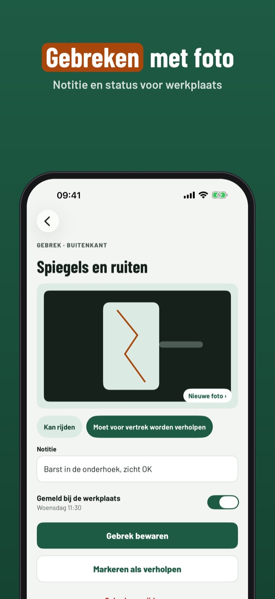
Sjåførklar is het hulpmiddel voor beroepschauffeurs: doe de dagelijkse controle, leg gebreken vast en houd de rij- en rusttijden bij die je zelf invoert.
De dagelijkse controle en gebreken voor één voertuig kun je zonder aankoop gebruiken. De volledige versie is een eenmalige aankoop voor alle voertuigen, PDF-rapport, geschiedenis en rijtijden. Geen abonnement.
Sjåførklar vervangt de tachograaf niet en is niet verbonden aan een overheidsinstantie. Je voert de rijtijd zelf in; geldende regels en de tachograaf gaan altijd voor. Het regeloverzicht is onze eigen samenvatting en geen juridisch advies.
Terms of Use (EULA): https://www.apple.com/legal/internet-services/itunes/dev/stdeula/
Privacy: https://baytechbv.github.io/privacy/sjaforklar-nordic/
Checkliste, Mängel, Lenkzeit
Tägliche Abfahrtskontrolle für LKW, Anhänger und Bus mit Mängeln, Foto und PDF-Bericht – plus ein klarer Überblick über deine Lenk- und Ruhezeiten. Ohne Internet.
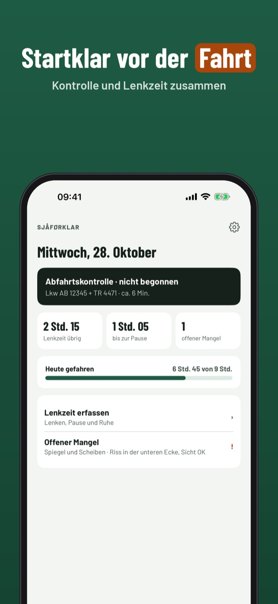
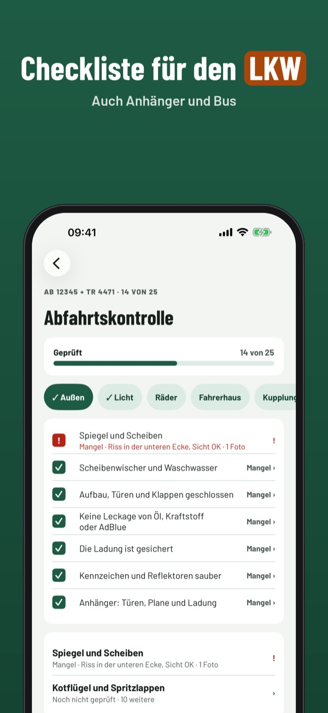
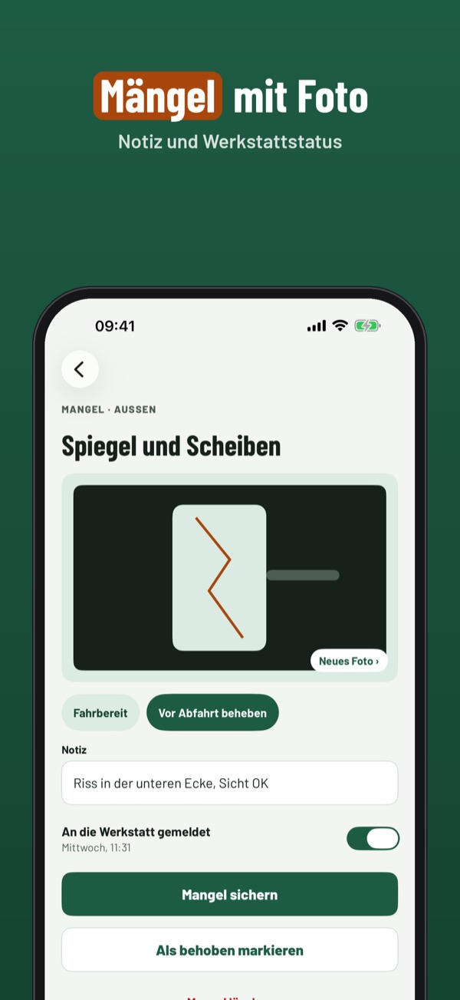
Sjåførklar ist das Werkzeug für Berufskraftfahrer: Abfahrtskontrolle machen, Mängel dokumentieren und selbst eingetragene Lenk- und Ruhezeiten im Blick behalten.
Abfahrtskontrolle und Mängel für ein Fahrzeug kannst du ohne Kauf nutzen. Die Vollversion ist ein Einmalkauf für alle Fahrzeuge, PDF-Bericht, Verlauf und Lenkzeiten. Kein Abo.
Sjåførklar ersetzt den Fahrtenschreiber nicht und ist mit keiner Behörde verbunden. Du trägst die Lenkzeit selbst ein; geltende Regeln und der Fahrtenschreiber gehen immer vor. Die Regelübersicht ist unsere eigene Zusammenfassung und keine Rechtsberatung.
Terms of Use (EULA): https://www.apple.com/legal/internet-services/itunes/dev/stdeula/
Privacy: https://baytechbv.github.io/privacy/sjaforklar-nordic/